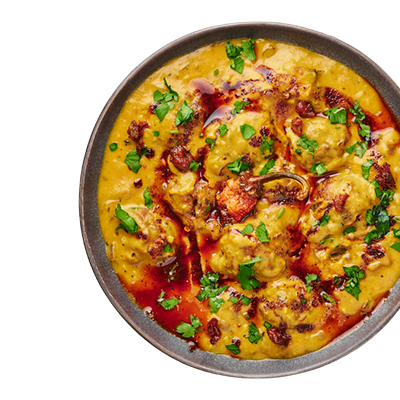

Vores Favoritkasse er en rejse gennem de mest elskede og ikoniske japanske retter. Uanset om du er en erfaren fan af japansk mad eller blot ønsker at udforske de mest populære smagsoplevelser, vil denne kasse tage dig med på en kulinarisk oplevelse fyldt med sushi, tempura, ramen og meget mere.
Uanset hvilken kasse du vælger, kan du være sikker på, at vores mål er at levere den bedste kvalitet og autentiske smag af Japan direkte til din dørtrin. Udforsk vores udvalg af madbokse, og lad os tage dig med på en uforglemmelig rejse gennem japansk madkunst.
| Indhold | Pr. boks | Pr. Måltid |
|---|---|---|
| Energi (kj/kcal) | 627/95 | 233/34 |
| Fedt (g) | 45 | 15 |
| Mættet Fedt (g) | 12 | 4 |
| Kulhydrater (g) | 6342 | 2171 |
| Protein (g) | 28 | 4 |
| Salt (g) | 12 | 4 |
| Sukker (g) | 0 | 0 |